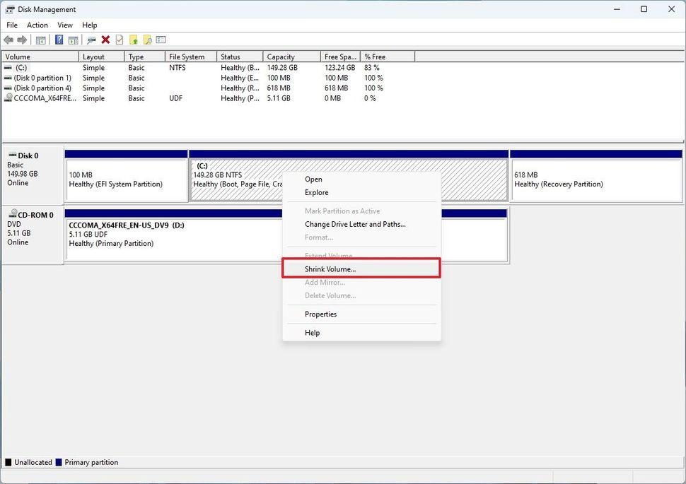

BytesOfProgress
Wiki
Dual-booting Windows & Linux
This also applies to dualbooting Windows with another Windows Installation.
What you need
Windows Computer, Linux Installation Media.
Installation
1. Boot up Windows.
2. Search for "Create and format hard disk" and select the top result to open the Disk Management app.
3. Right-click the partition and select the Shrink Volume option.
Note: Windows 11 needs at least 64 GiB of disk space to operate.
4. Confirm that you want to shrink the amount.
The partition of your Windows installation will be reduced by the number of space you specified.
5. Boot from your Linux installation media.
During the installation process of Linux, you should be able to see a free partition.
back